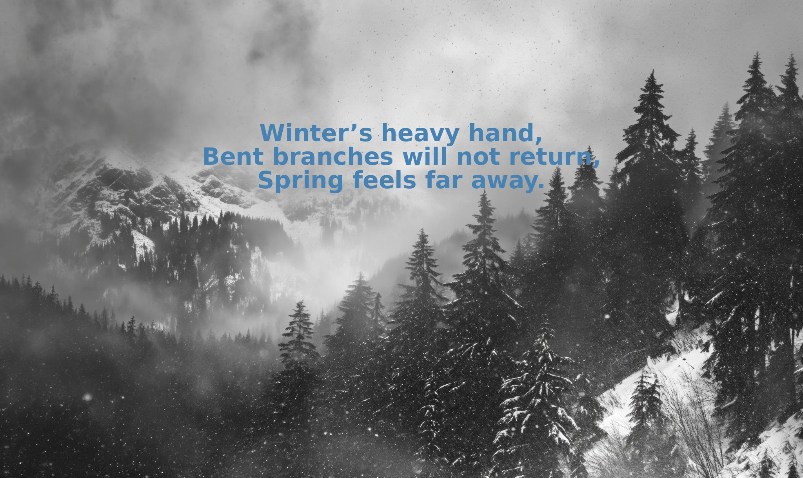

Poem

I felt that Robert Frost's "Birches" emulates the feelings of loss because of the ways that he uses nostalgia and imagery,
depicting bent branches weighed down by ice as symbols of adulthood's burdens (Frost, lines 5-6).
The speaker here longs for a time when the birch tree branches bent under a boy's playful swinging rather than the harshness of nature,
reflecting a desire to reclaim lost innocence (Frost, lines 23-24).
His yearning to "get away from earth awhile" (Frost, line 48) reveals an escapist wish, yet the "awhile" part here highlights the permanence of loss.
Through "Birches" Frost captures the sorrow of time's passage and the fading of carefree youth.
This is why I felt "Birches" showed the feeling of the human condition of loss so well.